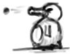
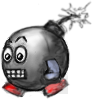
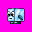
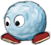
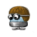
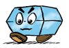
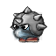
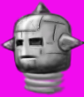

Evil Penguin
|  |
The Evil Penguin should look similar to Tux, it will probally
have another color and another shaped bill. Ranges of attack
might be something simple such as spitting balls or eggs at
Tux. There might even be multiple levels of evil penguins with
different behaviours (fire, ice).
|
Mr. Bomb
|  |
Pretty much every game has some kind of exploding enemy, so
SuperTux should have something like that too. For the moment
this should be our Mr. Bomb, a plain and simple Bomb running
on its tiny feed.
|
Mr. IceBlock
|  |
Mr. IceBlock could be the most basic enemy in SuperTux, he
just walks around without having any 'special attacks' or
something like that. Jumping on Mr. IceBlock should flatten
him and thus kill him.
|
Mr. Snowball
|  |
Little Mr. Snowball is a basic enemey which might start to
roll if kicked with a Iceblock or on other issues.
|
Bouncing Snowball
|
A bouncing/rolling ball that bounces around on the playfield
|
Flying Snowball
|  |
Flies vertically up and down a bit
|
Mr. Crystal
|  |
When Tux jumps on MrCrystal, MrCrystal will break into pieces.
|
Spiky
|  |
Spiky has spikes which makes it impossible for Tux to kill him
by jumping on him.
|
Jumpy Spiky
|  |
Moneybag replacement, jumps up and down and is not killable by jumping
|
Fish
Unsorted

Sprites
The following is a list of basic sprites that are needed, more
can never be bad, but it should especially made sure that the
few here are good and smooth. The width/height are only meant
as guideline, a bit larger/smaller is ok and recomment, since
overlap of graphics can produce a more cleaner look in the
final game. Some of the other pages here contain sketches of
the sprites.
- SmallTux - 32x32, ie. Tux without extras
- Tux - 64x32, ie. Tux with 'size' extra
- SuperTux - 64x32, ie Tux with 'size' and 'firepower' extra
- Mr. Iceblock - 32x32 most basic enemy, needs two or three
frames for a walking, at least one for dieing
- Mr. Bomb - 32x32 a basic enemy that explodes after being
kill, needs two or three for walking, at least two for being
dead plus at least one for explosion